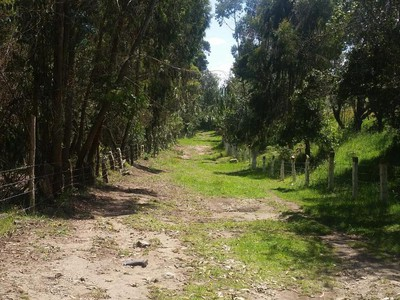
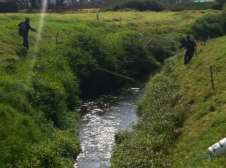

Publicado el 30 de septiembre de 2025
En las últimas semanas, los habitantes de la vereda Los Manzanos han reportado un incremento preocupante en la tala de árboles nativos en zonas cercanas a los cerros occidentales del municipio de Facatativá. Según testimonios de los residentes, varias áreas boscosas han sido intervenidas por personas que buscan aprovechar la madera sin los debidos permisos ambientales.
 Las autoridades locales, junto con la Corporación Autónoma Regional (CAR), han iniciado una investigación para determinar el impacto ambiental y establecer los responsables de las talas ilegales. La deforestación en esta zona no solo afecta la biodiversidad, sino también la estabilidad del suelo y la calidad del aire en el municipio.
“Estamos coordinando operativos con la Policía Ambiental para frenar la tala y promover la reforestación”, explicó María Camila Rojas, funcionaria de la Secretaría de Medio Ambiente de Facatativá.
Por su parte, colectivos ambientales como Guardianes del Bosque han hecho un llamado a la comunidad para denunciar cualquier actividad sospechosa y participar en las próximas jornadas de reforestación que se realizarán en octubre.
La CAR recordó que el aprovechamiento forestal sin autorización está penado por la ley y puede acarrear sanciones económicas y legales. Además, invitó a los ciudadanos a conocer los programas de “Bosques de Vida”, que buscan restaurar ecosistemas y promover prácticas sostenibles.
← Volver al inicio